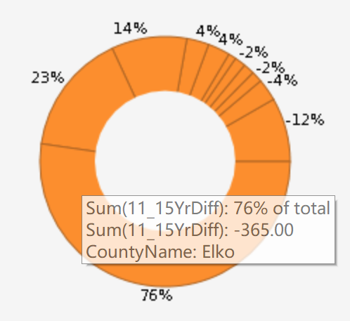

Job Growth Reporting Series Comparison of Job Growth From 2011 to 2015
-
Here is the overview of this report:
.png ) Click me for the original report.
Click me for the original report.
-
The advantages of this data visualization:
- Easy to understand.
- Show the data in detail.

-
The disadvantages of this data visualization:
- No distinction is made between the colors of the various classifications in the pie chart so that the viewers will feel confuse when see the chart at first eyes.
- There are both positive and negative data in the chart. It seems like there are no specific differences between these two kind of data.
-
My suggestions for improving:
- Add more colors in the chart.
- Turn the pie chart into the column-negative chart which has the distinction of positive and negative data and do not worry about the total percentage.